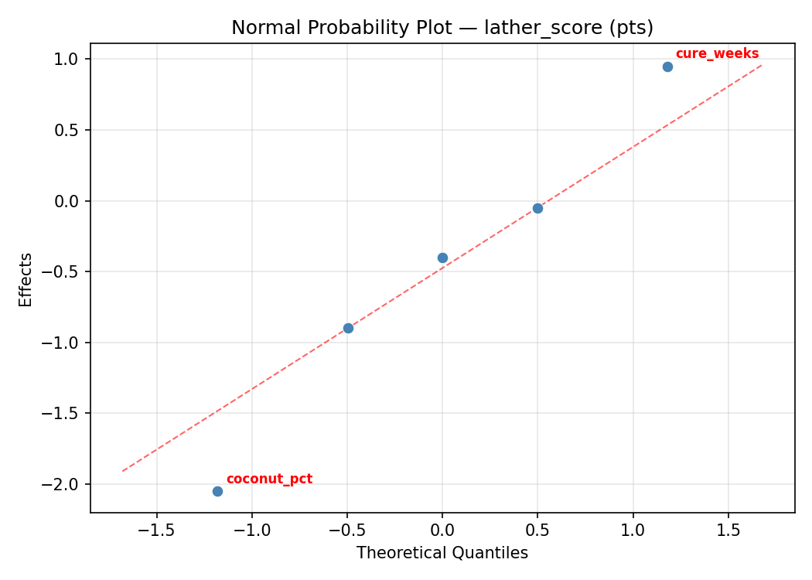
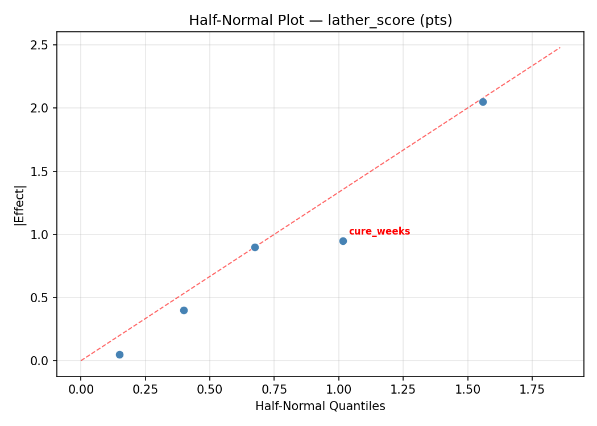
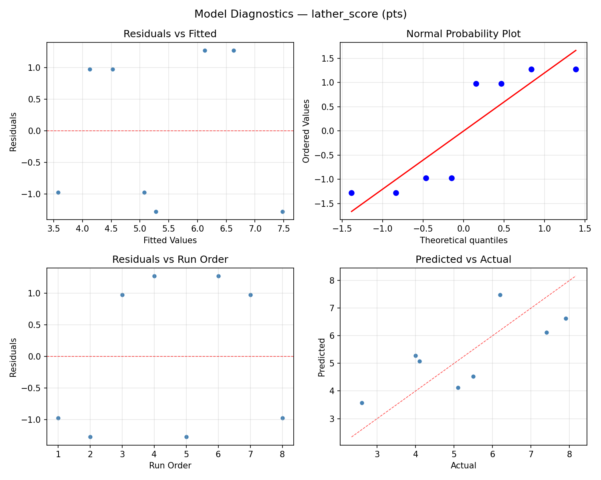
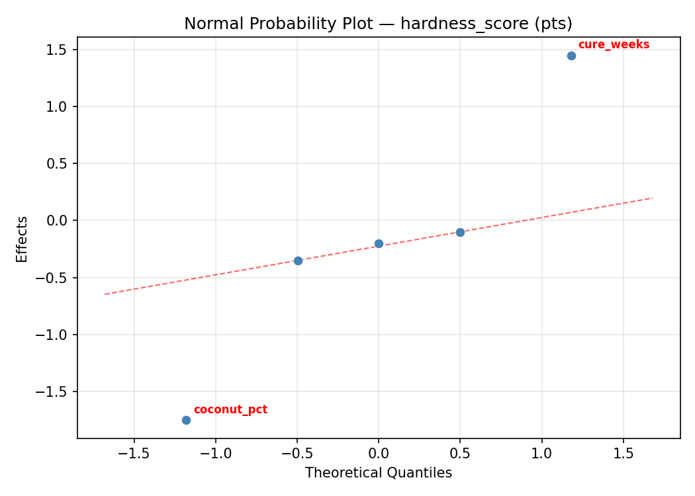
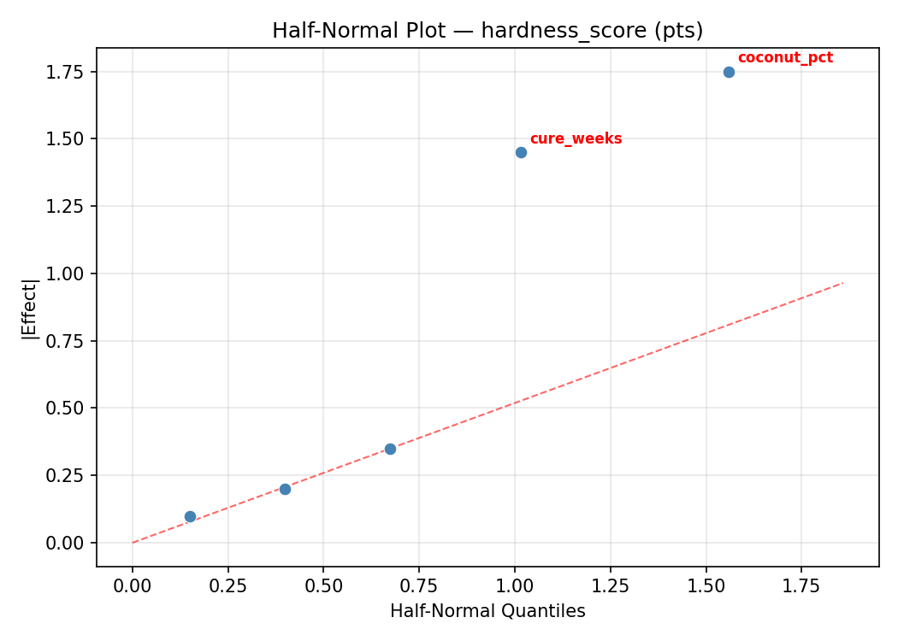
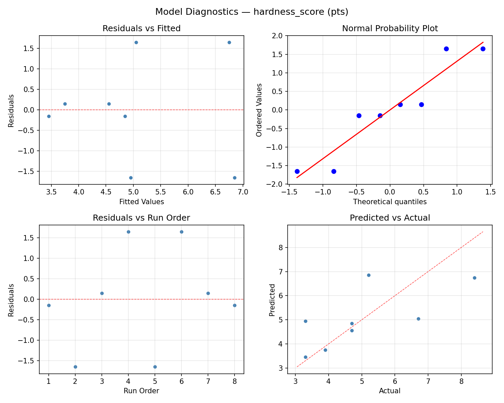

Summary
This experiment investigates handmade soap formulation. Fractional factorial screening of coconut oil ratio, olive oil ratio, lye concentration, essential oil, and cure time for lather quality and hardness.
The design varies 5 factors: coconut pct (%), ranging from 15 to 40, olive pct (%), ranging from 30 to 70, lye concentration (%), ranging from 28 to 38, essential oil pct (%), ranging from 1 to 4, and cure weeks (weeks), ranging from 4 to 8. The goal is to optimize 2 responses: lather score (pts) (maximize) and hardness score (pts) (maximize). Fixed conditions held constant across all runs include superfat pct = 5, method = cold_process.
A fractional factorial design reduces the number of runs from 32 to 8 by deliberately confounding higher-order interactions. This is ideal for screening — identifying which of the 5 factors matter most before investing in a full study.
Key Findings
For lather score, the most influential factors were olive pct (26.4%), coconut pct (25.6%), lye concentration (24.0%). The best observed value was 7.9 (at coconut pct = 15, olive pct = 70, lye concentration = 38).
For hardness score, the most influential factors were lye concentration (47.3%), olive pct (23.7%), coconut pct (22.6%). The best observed value was 8.4 (at coconut pct = 15, olive pct = 70, lye concentration = 38).
Recommended Next Steps
- Follow up with a response surface design (CCD or Box-Behnken) on the top 3–4 factors to model curvature and find the true optimum.
- Consider whether any fixed factors should be varied in a future study.
- The screening results can guide factor reduction — drop factors contributing less than 5% and re-run with a smaller, more focused design.
Experimental Setup
Factors
| Factor | Low | High | Unit |
|---|
coconut_pct | 15 | 40 | % |
olive_pct | 30 | 70 | % |
lye_concentration | 28 | 38 | % |
essential_oil_pct | 1 | 4 | % |
cure_weeks | 4 | 8 | weeks |
Fixed: superfat_pct = 5, method = cold_process
Responses
| Response | Direction | Unit |
|---|
lather_score | ↑ maximize | pts |
hardness_score | ↑ maximize | pts |
Configuration
{
"metadata": {
"name": "Handmade Soap Formulation",
"description": "Fractional factorial screening of coconut oil ratio, olive oil ratio, lye concentration, essential oil, and cure time for lather quality and hardness"
},
"factors": [
{
"name": "coconut_pct",
"levels": [
"15",
"40"
],
"type": "continuous",
"unit": "%"
},
{
"name": "olive_pct",
"levels": [
"30",
"70"
],
"type": "continuous",
"unit": "%"
},
{
"name": "lye_concentration",
"levels": [
"28",
"38"
],
"type": "continuous",
"unit": "%"
},
{
"name": "essential_oil_pct",
"levels": [
"1",
"4"
],
"type": "continuous",
"unit": "%"
},
{
"name": "cure_weeks",
"levels": [
"4",
"8"
],
"type": "continuous",
"unit": "weeks"
}
],
"fixed_factors": {
"superfat_pct": "5",
"method": "cold_process"
},
"responses": [
{
"name": "lather_score",
"optimize": "maximize",
"unit": "pts"
},
{
"name": "hardness_score",
"optimize": "maximize",
"unit": "pts"
}
],
"settings": {
"operation": "fractional_factorial",
"test_script": "use_cases/144_soap_making/sim.sh"
}
}
Experimental Matrix
The Fractional Factorial Design produces 8 runs. Each row is one experiment with specific factor settings.
| Run | coconut_pct | olive_pct | lye_concentration | essential_oil_pct | cure_weeks |
|---|
| 1 | 15 | 70 | 38 | 1 | 4 |
| 2 | 40 | 30 | 28 | 1 | 4 |
| 3 | 40 | 70 | 28 | 4 | 4 |
| 4 | 40 | 70 | 38 | 4 | 8 |
| 5 | 15 | 70 | 28 | 1 | 8 |
| 6 | 40 | 30 | 38 | 1 | 8 |
| 7 | 15 | 30 | 28 | 4 | 8 |
| 8 | 15 | 30 | 38 | 4 | 4 |
Step-by-Step Workflow
1
Preview the design
$ python doe.py info --config use_cases/144_soap_making/config.json
2
Generate the runner script
$ python doe.py generate --config use_cases/144_soap_making/config.json \
--output use_cases/144_soap_making/results/run.sh --seed 42
3
Execute the experiments
$ bash use_cases/144_soap_making/results/run.sh
4
Analyze results
$ python doe.py analyze --config use_cases/144_soap_making/config.json
5
Get optimization recommendations
$ python doe.py optimize --config use_cases/144_soap_making/config.json
6
Multi-objective optimization
With 2 competing responses, use --multi to find the best compromise via Derringer–Suich desirability.
$ python doe.py optimize --config use_cases/144_soap_making/config.json --multi
7
Generate the HTML report
$ python doe.py report --config use_cases/144_soap_making/config.json \
--output use_cases/144_soap_making/results/report.html
Features Exercised
| Feature | Value |
|---|
| Design type | fractional_factorial |
| Factor types | continuous (all 5) |
| Arg style | double-dash |
| Responses | 2 (lather_score ↑, hardness_score ↑) |
| Total runs | 8 |
Analysis Results
Generated from actual experiment runs using the DOE Helper Tool.
Response: lather_score
Top factors: olive_pct (26.4%), coconut_pct (25.6%), lye_concentration (24.0%).
ANOVA
| Source | DF | SS | MS | F | p-value |
|---|
| Source | DF | SS | MS | F | p-value |
| coconut_pct | 1 | 5.4450 | 5.4450 | 0.996 | 0.3641 |
| olive_pct | 1 | 5.7800 | 5.7800 | 1.057 | 0.3510 |
| lye_concentration | 1 | 4.8050 | 4.8050 | 0.879 | 0.3916 |
| essential_oil_pct | 1 | 0.8450 | 0.8450 | 0.155 | 0.7104 |
| cure_weeks | 1 | 1.6200 | 1.6200 | 0.296 | 0.6096 |
| coconut_pct*olive_pct | 1 | 0.8450 | 0.8450 | 0.155 | 0.7104 |
| coconut_pct*lye_concentration | 1 | 1.6200 | 1.6200 | 0.296 | 0.6096 |
| coconut_pct*essential_oil_pct | 1 | 5.7800 | 5.7800 | 1.057 | 0.3510 |
| coconut_pct*cure_weeks | 1 | 4.8050 | 4.8050 | 0.879 | 0.3916 |
| olive_pct*lye_concentration | 1 | 3.6450 | 3.6450 | 0.667 | 0.4513 |
| olive_pct*essential_oil_pct | 1 | 5.4450 | 5.4450 | 0.996 | 0.3641 |
| olive_pct*cure_weeks | 1 | 0.3200 | 0.3200 | 0.059 | 0.8184 |
| lye_concentration*essential_oil_pct | 1 | 0.3200 | 0.3200 | 0.059 | 0.8184 |
| lye_concentration*cure_weeks | 1 | 5.4450 | 5.4450 | 0.996 | 0.3641 |
| essential_oil_pct*cure_weeks | 1 | 3.6450 | 3.6450 | 0.667 | 0.4513 |
| Error | (Lenth | PSE) | 5 | 27.3375 | 5.4675 |
| Total | 7 | 22.4600 | 3.2086 | | |
Pareto Chart

Main Effects Plot

Normal Probability Plot of Effects

Half-Normal Plot of Effects

Model Diagnostics

Response: hardness_score
Top factors: lye_concentration (47.3%), olive_pct (23.7%), coconut_pct (22.6%).
ANOVA
| Source | DF | SS | MS | F | p-value |
|---|
| Source | DF | SS | MS | F | p-value |
| coconut_pct | 1 | 2.2050 | 2.2050 | 0.667 | 0.4513 |
| olive_pct | 1 | 2.4200 | 2.4200 | 0.732 | 0.4314 |
| lye_concentration | 1 | 9.6800 | 9.6800 | 2.927 | 0.1478 |
| essential_oil_pct | 1 | 0.0200 | 0.0200 | 0.006 | 0.9410 |
| cure_weeks | 1 | 0.0800 | 0.0800 | 0.024 | 0.8825 |
| coconut_pct*olive_pct | 1 | 0.0200 | 0.0200 | 0.006 | 0.9410 |
| coconut_pct*lye_concentration | 1 | 0.0800 | 0.0800 | 0.024 | 0.8825 |
| coconut_pct*essential_oil_pct | 1 | 2.4200 | 2.4200 | 0.732 | 0.4314 |
| coconut_pct*cure_weeks | 1 | 9.6800 | 9.6800 | 2.927 | 0.1478 |
| olive_pct*lye_concentration | 1 | 6.1250 | 6.1250 | 1.852 | 0.2317 |
| olive_pct*essential_oil_pct | 1 | 2.2050 | 2.2050 | 0.667 | 0.4513 |
| olive_pct*cure_weeks | 1 | 1.1250 | 1.1250 | 0.340 | 0.5851 |
| lye_concentration*essential_oil_pct | 1 | 1.1250 | 1.1250 | 0.340 | 0.5851 |
| lye_concentration*cure_weeks | 1 | 2.2050 | 2.2050 | 0.667 | 0.4513 |
| essential_oil_pct*cure_weeks | 1 | 6.1250 | 6.1250 | 1.852 | 0.2317 |
| Error | (Lenth | PSE) | 5 | 16.5375 | 3.3075 |
| Total | 7 | 21.6550 | 3.0936 | | |
Pareto Chart

Main Effects Plot

Normal Probability Plot of Effects

Half-Normal Plot of Effects

Model Diagnostics

Response Surface Plots
3D surfaces fitted with quadratic RSM. Red dots are observed data points.
hardness score coconut pct vs cure weeks

hardness score coconut pct vs essential oil pct

hardness score coconut pct vs lye concentration

hardness score coconut pct vs olive pct

hardness score essential oil pct vs cure weeks

hardness score lye concentration vs cure weeks

hardness score lye concentration vs essential oil pct

hardness score olive pct vs cure weeks

hardness score olive pct vs essential oil pct

hardness score olive pct vs lye concentration

lather score coconut pct vs cure weeks

lather score coconut pct vs essential oil pct

lather score coconut pct vs lye concentration

lather score coconut pct vs olive pct

lather score essential oil pct vs cure weeks

lather score lye concentration vs cure weeks

lather score lye concentration vs essential oil pct

lather score olive pct vs cure weeks

lather score olive pct vs essential oil pct

lather score olive pct vs lye concentration

Multi-Objective Optimization
When responses compete, Derringer–Suich desirability finds the best compromise.
Each response is scaled to a 0–1 desirability, then combined via a weighted geometric mean.
Overall Desirability
D = 0.9545
Per-Response Desirability
| Response | Weight | Desirability | Predicted | Dir |
|---|
lather_score |
1.5 |
|
7.90 0.9545 7.90 pts |
↑ |
hardness_score |
1.5 |
|
8.40 0.9545 8.40 pts |
↑ |
Recommended Settings
| Factor | Value |
|---|
coconut_pct | 40 % |
olive_pct | 70 % |
lye_concentration | 28 % |
essential_oil_pct | 4 % |
cure_weeks | 4 weeks |
Source: from observed run #6
Trade-off Summary
Sacrifice = how much worse than single-objective best.
| Response | Predicted | Best Observed | Sacrifice |
|---|
hardness_score | 8.40 | 8.40 | +0.00 |
Top 3 Runs by Desirability
| Run | D | Factor Settings |
|---|
| #4 | 0.7523 | coconut_pct=15, olive_pct=30, lye_concentration=28, essential_oil_pct=4, cure_weeks=8 |
| #2 | 0.5046 | coconut_pct=40, olive_pct=30, lye_concentration=28, essential_oil_pct=1, cure_weeks=4 |
Model Quality
| Response | R² | Type |
|---|
hardness_score | 0.7885 | linear |
Full Multi-Objective Output
============================================================
MULTI-OBJECTIVE OPTIMIZATION
Method: Derringer-Suich Desirability Function
============================================================
Overall desirability: D = 0.9545
Response Weight Desirability Predicted Direction
---------------------------------------------------------------------
lather_score 1.5 0.9545 7.90 pts ↑
hardness_score 1.5 0.9545 8.40 pts ↑
Recommended settings:
coconut_pct = 40 %
olive_pct = 70 %
lye_concentration = 28 %
essential_oil_pct = 4 %
cure_weeks = 4 weeks
(from observed run #6)
Trade-off summary:
lather_score: 7.90 (best observed: 7.90, sacrifice: +0.00)
hardness_score: 8.40 (best observed: 8.40, sacrifice: +0.00)
Model quality:
lather_score: R² = 0.7685 (linear)
hardness_score: R² = 0.7885 (linear)
Top 3 observed runs by overall desirability:
1. Run #6 (D=0.9545): coconut_pct=40, olive_pct=70, lye_concentration=28, essential_oil_pct=4, cure_weeks=4
2. Run #4 (D=0.7523): coconut_pct=15, olive_pct=30, lye_concentration=28, essential_oil_pct=4, cure_weeks=8
3. Run #2 (D=0.5046): coconut_pct=40, olive_pct=30, lye_concentration=28, essential_oil_pct=1, cure_weeks=4
Full Analysis Output
=== Main Effects: lather_score ===
Factor Effect Std Error % Contribution
--------------------------------------------------------------
olive_pct 1.7000 0.6333 26.4%
coconut_pct -1.6500 0.6333 25.6%
lye_concentration 1.5500 0.6333 24.0%
cure_weeks 0.9000 0.6333 14.0%
essential_oil_pct 0.6500 0.6333 10.1%
=== ANOVA Table: lather_score ===
Source DF SS MS F p-value
-----------------------------------------------------------------------------
coconut_pct 1 5.4450 5.4450 0.996 0.3641
olive_pct 1 5.7800 5.7800 1.057 0.3510
lye_concentration 1 4.8050 4.8050 0.879 0.3916
essential_oil_pct 1 0.8450 0.8450 0.155 0.7104
cure_weeks 1 1.6200 1.6200 0.296 0.6096
coconut_pct*olive_pct 1 0.8450 0.8450 0.155 0.7104
coconut_pct*lye_concentration 1 1.6200 1.6200 0.296 0.6096
coconut_pct*essential_oil_pct 1 5.7800 5.7800 1.057 0.3510
coconut_pct*cure_weeks 1 4.8050 4.8050 0.879 0.3916
olive_pct*lye_concentration 1 3.6450 3.6450 0.667 0.4513
olive_pct*essential_oil_pct 1 5.4450 5.4450 0.996 0.3641
olive_pct*cure_weeks 1 0.3200 0.3200 0.059 0.8184
lye_concentration*essential_oil_pct 1 0.3200 0.3200 0.059 0.8184
lye_concentration*cure_weeks 1 5.4450 5.4450 0.996 0.3641
essential_oil_pct*cure_weeks 1 3.6450 3.6450 0.667 0.4513
Error (Lenth PSE) 5 27.3375 5.4675
Total 7 22.4600 3.2086
Note: Error estimated using Lenth's pseudo-standard-error (unreplicated design)
=== Interaction Effects: lather_score ===
Factor A Factor B Interaction % Contribution
------------------------------------------------------------------------
coconut_pct essential_oil_pct 1.7000 14.7%
olive_pct essential_oil_pct -1.6500 14.2%
lye_concentration cure_weeks -1.6500 14.2%
coconut_pct cure_weeks 1.5500 13.4%
olive_pct lye_concentration 1.3500 11.6%
essential_oil_pct cure_weeks 1.3500 11.6%
coconut_pct lye_concentration 0.9000 7.8%
coconut_pct olive_pct 0.6500 5.6%
olive_pct cure_weeks -0.4000 3.4%
lye_concentration essential_oil_pct -0.4000 3.4%
=== Summary Statistics: lather_score ===
coconut_pct:
Level N Mean Std Min Max
------------------------------------------------------------
15 4 6.1750 1.2366 5.1000 7.9000
40 4 4.5250 2.0353 2.6000 7.4000
olive_pct:
Level N Mean Std Min Max
------------------------------------------------------------
30 4 4.5000 1.5297 2.6000 6.2000
70 4 6.2000 1.7944 4.0000 7.9000
lye_concentration:
Level N Mean Std Min Max
------------------------------------------------------------
28 4 4.5750 1.6049 2.6000 6.2000
38 4 6.1250 1.8191 4.1000 7.9000
essential_oil_pct:
Level N Mean Std Min Max
------------------------------------------------------------
1 4 5.0250 2.2530 2.6000 7.9000
4 4 5.6750 1.4592 4.0000 7.4000
cure_weeks:
Level N Mean Std Min Max
------------------------------------------------------------
4 4 4.9000 2.2465 2.6000 7.9000
8 4 5.8000 1.3784 4.1000 7.4000
=== Main Effects: hardness_score ===
Factor Effect Std Error % Contribution
--------------------------------------------------------------
lye_concentration 2.2000 0.6218 47.3%
olive_pct 1.1000 0.6218 23.7%
coconut_pct -1.0500 0.6218 22.6%
cure_weeks 0.2000 0.6218 4.3%
essential_oil_pct -0.1000 0.6218 2.2%
=== ANOVA Table: hardness_score ===
Source DF SS MS F p-value
-----------------------------------------------------------------------------
coconut_pct 1 2.2050 2.2050 0.667 0.4513
olive_pct 1 2.4200 2.4200 0.732 0.4314
lye_concentration 1 9.6800 9.6800 2.927 0.1478
essential_oil_pct 1 0.0200 0.0200 0.006 0.9410
cure_weeks 1 0.0800 0.0800 0.024 0.8825
coconut_pct*olive_pct 1 0.0200 0.0200 0.006 0.9410
coconut_pct*lye_concentration 1 0.0800 0.0800 0.024 0.8825
coconut_pct*essential_oil_pct 1 2.4200 2.4200 0.732 0.4314
coconut_pct*cure_weeks 1 9.6800 9.6800 2.927 0.1478
olive_pct*lye_concentration 1 6.1250 6.1250 1.852 0.2317
olive_pct*essential_oil_pct 1 2.2050 2.2050 0.667 0.4513
olive_pct*cure_weeks 1 1.1250 1.1250 0.340 0.5851
lye_concentration*essential_oil_pct 1 1.1250 1.1250 0.340 0.5851
lye_concentration*cure_weeks 1 2.2050 2.2050 0.667 0.4513
essential_oil_pct*cure_weeks 1 6.1250 6.1250 1.852 0.2317
Error (Lenth PSE) 5 16.5375 3.3075
Total 7 21.6550 3.0936
Note: Error estimated using Lenth's pseudo-standard-error (unreplicated design)
=== Interaction Effects: hardness_score ===
Factor A Factor B Interaction % Contribution
------------------------------------------------------------------------
coconut_pct cure_weeks 2.2000 20.6%
olive_pct lye_concentration 1.7500 16.4%
essential_oil_pct cure_weeks 1.7500 16.4%
coconut_pct essential_oil_pct 1.1000 10.3%
olive_pct essential_oil_pct -1.0500 9.8%
lye_concentration cure_weeks -1.0500 9.8%
olive_pct cure_weeks -0.7500 7.0%
lye_concentration essential_oil_pct -0.7500 7.0%
coconut_pct lye_concentration 0.2000 1.9%
coconut_pct olive_pct -0.1000 0.9%
=== Summary Statistics: hardness_score ===
coconut_pct:
Level N Mean Std Min Max
------------------------------------------------------------
15 4 5.5500 1.9740 3.9000 8.4000
40 4 4.5000 1.6083 3.3000 6.7000
olive_pct:
Level N Mean Std Min Max
------------------------------------------------------------
30 4 4.4750 0.8180 3.3000 5.2000
70 4 5.5750 2.3964 3.3000 8.4000
lye_concentration:
Level N Mean Std Min Max
------------------------------------------------------------
28 4 3.9250 0.8958 3.3000 5.2000
38 4 6.1250 1.7858 4.7000 8.4000
essential_oil_pct:
Level N Mean Std Min Max
------------------------------------------------------------
1 4 5.0750 2.2897 3.3000 8.4000
4 4 4.9750 1.4033 3.3000 6.7000
cure_weeks:
Level N Mean Std Min Max
------------------------------------------------------------
4 4 4.9250 2.4088 3.3000 8.4000
8 4 5.1250 1.1786 3.9000 6.7000
Optimization Recommendations
=== Optimization: lather_score ===
Direction: maximize
Best observed run: #6
coconut_pct = 15
olive_pct = 70
lye_concentration = 38
essential_oil_pct = 1
cure_weeks = 4
Value: 7.9
RSM Model (linear, R² = 0.7887, Adj R² = 0.2606):
Coefficients:
intercept +5.3500
coconut_pct -0.0250
olive_pct +0.8250
lye_concentration +1.0500
essential_oil_pct -0.5000
cure_weeks +0.4250
Predicted optimum (from linear model, at observed points):
coconut_pct = 15
olive_pct = 70
lye_concentration = 38
essential_oil_pct = 1
cure_weeks = 4
Predicted value: 7.3250
Surface optimum (via L-BFGS-B, linear model):
coconut_pct = 15
olive_pct = 70
lye_concentration = 38
essential_oil_pct = 1
cure_weeks = 8
Predicted value: 8.1750
Model quality: Good fit — general trends are captured, some noise remains.
Factor importance:
1. lye_concentration (effect: 2.1, contribution: 37.2%)
2. olive_pct (effect: 1.6, contribution: 29.2%)
3. essential_oil_pct (effect: -1.0, contribution: 17.7%)
4. cure_weeks (effect: 0.9, contribution: 15.0%)
5. coconut_pct (effect: -0.0, contribution: 0.9%)
=== Optimization: hardness_score ===
Direction: maximize
Best observed run: #6
coconut_pct = 15
olive_pct = 70
lye_concentration = 38
essential_oil_pct = 1
cure_weeks = 4
Value: 8.4
RSM Model (linear, R² = 0.7920, Adj R² = 0.2719):
Coefficients:
intercept +5.0250
coconut_pct -0.0500
olive_pct +0.5250
lye_concentration +1.2250
essential_oil_pct -0.5500
cure_weeks -0.2500
Predicted optimum (from linear model, at observed points):
coconut_pct = 15
olive_pct = 70
lye_concentration = 38
essential_oil_pct = 1
cure_weeks = 4
Predicted value: 7.6250
Surface optimum (via L-BFGS-B, linear model):
coconut_pct = 15
olive_pct = 70
lye_concentration = 38
essential_oil_pct = 1
cure_weeks = 4
Predicted value: 7.6250
Model quality: Good fit — general trends are captured, some noise remains.
Factor importance:
1. lye_concentration (effect: 2.5, contribution: 47.1%)
2. essential_oil_pct (effect: -1.1, contribution: 21.2%)
3. olive_pct (effect: 1.0, contribution: 20.2%)
4. cure_weeks (effect: -0.5, contribution: 9.6%)
5. coconut_pct (effect: -0.1, contribution: 1.9%)